Daughter Clara Serena
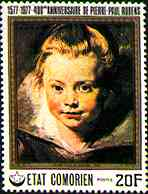 |
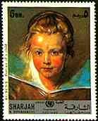 |
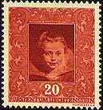 |
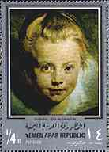 |
Clara Serena was Rubens' daughter. She died at age 12, in 1623. Tip: Point with the mouse index toward the stamps for more information.
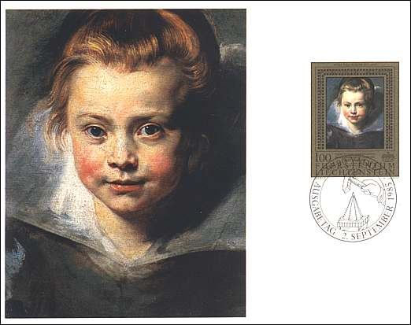 |
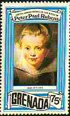 |
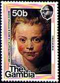 |
The stamps and the maximum card reproduce a painting conserved in the art collection of princes of Liechtenstein.
Lady-in-Waiting to the Infanta Isabella
The Portrait of a Lady-in-Waiting to the Infanta Isabella (see the FDC and the stamps below) is exposed at Hermitage Museum in St. Petersburg.

This charming image of a young and fragile girl represents the artist's idealized image of his defunct daughter Clara Serena. This work, shown on the above FDC, is unique amongst Rubens' portraits. It is distinguished by strict lines and restrained coloring unusual to Rubens.
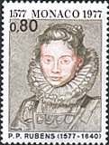 |
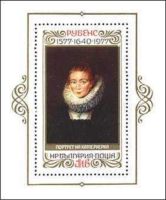 |
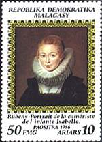 |
The painting's title derives from the inscription on a preliminary drawing (conserved at Albertina, Vienna; see above on the left), possibly added in the 17th century. For sure this is one of the most touching works of arts ever!
Son Nicolaes
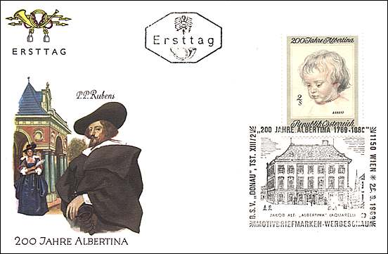 |
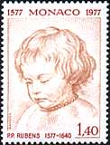 |
The above drawing shows the son of
the artist, Nicoles, aged two. The drawing is conserved in the Albertina
Drawings Collection (Vienna, Austria). The nice FDC displayed above was issued
to commemorate the 200th anniversary of the Albertina collection, the most
important drawings collection in the world.
The illustration shown on the FDC is
one of the last by the hand of Prof. Ernst Schrom, killed in a motor car
accident on May 8, 1969. Many special postage stamps, some of the most beautiful
ones issued by the Post Master General of Austria, were designed by Prof. Schrom.
Background: The Four Continents, Fine Arts Museum in Vienna, Austria
Links:
Other Flemish Paintings on this site: Rembrandt, Rubens, Vermeer, Van Gogh
Biographical data about Flemish Painters
Hermitage Museum
| Revised: 03/18/01. Copyright © 1997 - 2001 by Victor Manta, Switzerland. All rights reserved in all countries. |
|
|